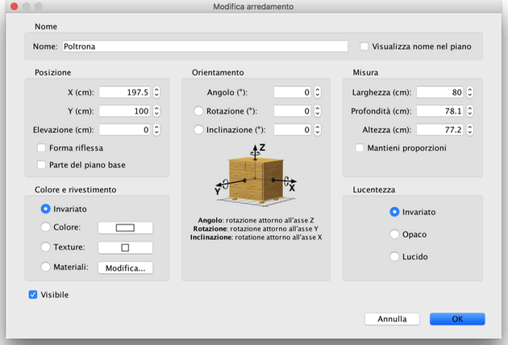

| Modificare l'arredamento | |||
|
Puoi modificare la posizione, la misura e l'angolazione
dell'arredamento della casa, sia con il mouse che attraverso la
voce di menù Arredamento > Modifica... Quando un pezzo è selezionato nella piantina, puoi inoltra cambiare la sua misura, altezza da terra o angolo tramite uno dei quattro indicatori che appaiono ad ogni angolo del pezzo selezionato.
|

|
|
Quando il puntatore del mouse è su uno di questi angoli,
cambia per indicare che puoi trascinare questo angolo per
cambiare gli attributi corrispondenti del pezzo di arredamento
selezionato. Mentre premi il pulsante del mouse, un suggerimento
mostra il valore dell'attributo(i) modificato(i). Un pezzo di arredamento può essere inoltre modificato mediante il suo pannello, facendo doppio click su questo pezzo nella piantina o nella lista arredamento, o scegliendo Arredamento > Modifica... dopo averlo selezionato.  Nel pannello arredamento, puoi cambiare il suo nome, l'ascissa
(X) e l'ordinata (Y) del suo centro, l'elevazione del suo fondo
dal pavimento, la sua larghezza, la sua profondità e la sua
altezza, il suo colore, la sua visibilità, il suo angolo di
rotazione, se il suo nome deve essere o meno visualizzato
nella piantina e se il suo modello 3D deve essere
ribaltato. |
|